gdsfactory.simulation.simphony.components
gdsfactory.simulation.simphony.components#
components for gdsfactory simphony circuit simulation plugin.
- gdsfactory.simulation.simphony.components.bend_circular(radius=10.0, width=0.5, thickness=0.22, angle=90.0, sw_angle=90.0, **kwargs)[source]#
Return simphony Model for a bend using a straight.
FIXME. this is fake bend! need to create a better model
- Parameters
radius (
float) – Radius of straight in microns.width (
float) – Width of the straights in micronsthickness (
float) – Thickness of the straights in micronsangle (
float) – Number of deg of circle that bent straight transversessw_angle (
float) – Sidewall angle from horizontal in degrees. Defaults to 90.kwargs – geometrical args that this model ignores
- gdsfactory.simulation.simphony.components.bend_euler(radius=10.0, width=0.5, thickness=0.22, angle=90, sw_angle=90.0, **kwargs)[source]#
Return simphony Model for a bend using a straight.
FIXME. this is fake bend! need to create a better model
- Parameters
radius (
float) – Radius of straight in microns.width (
float) – Width of the straights in micronsthickness (
float) – Thickness of the straights in micronsangle (
float) – Number of deg of circle that bent straight transversessw_angle (
float) – Sidewall angle from horizontal in degrees, ie 90 makes a square. Defaults to 90.kwargs – geometrical args that this model ignores
- gdsfactory.simulation.simphony.components.coupler_ring(radius=5.0, width=0.5, thickness=0.22, gap=0.22, length_x=4.0, sw_angle=90.0, **kwargs)[source]#
Return model for for half a ring coupler.
- Parameters
radius (
float) – 5width (
float) – width um (Valid for 0.4-0.6)thickness (
float) – Thickness in um (Valid for 0.18-0.24)gap (
float) – distance between straights in um. (Must be > 0.1)length_x (
float) – Length of straight portion of coupler in umsw_angle (
float) – Sidewall angle from horizontal in degreeskwargs – geometrical args that this model ignores
o2 \ / o3 \ / --------- o1---------------o4 length_x
import gdsfactory as gf c = gf.components.coupler_ring() c.plot()
(Source code, png, hires.png, pdf)
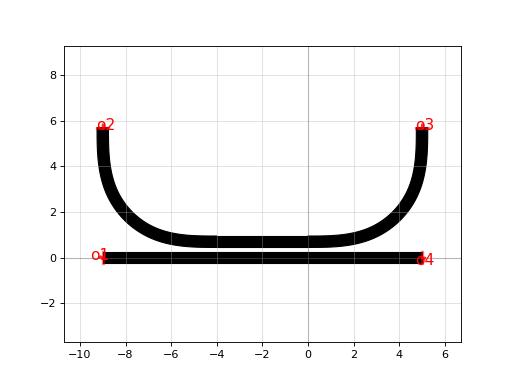 import gdsfactory.simulation.simphony as gs import gdsfactory.simulation.simphony.components as gc m = gc.coupler_ring() gs.plot_model(m)
(Source code, png, hires.png, pdf)
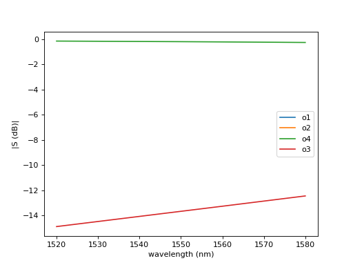
{kind=link}
{kind=link}
{kind=link}
{kind=link}
- gdsfactory.simulation.simphony.components.coupler(width=0.5, thickness=0.22, gap=0.22, length=10.0, sw_angle=90.0, dx=1.5, dy=5.0, **kwargs)[source]#
Return simphony Directional coupler model.
- Parameters
width (
float) – Width of the straight in um (Valid for 0.4-0.6)thickness (
float) – Thickness of straight in um (Valid for 0.18-0.24)gap (
float) – Minimum distance between the two straights edge in um. (Must be > 0.1)length (
float) – float or ndarray Length of the straight portion of both straights in um.dx (
float) – Horizontal distance between end of coupler until straight portion in nm.dy (
float) – Vertical distance between end of coupler until straight portion in um.sw_angle (
float) – Sidewall angle from horizontal in degrees
This is what most people think of when they think directional coupler. Ports are named as
H dx dx |------| |------| o2 ________ _______o3 _ _ \ / | | \ length / | _|_V ======================= gap | dy / \ | ________/ \_______ | o1 o4
import gdsfactory as gf c = gf.components.coupler(gap=0.2, length=10) c.plot()
(Source code, png, hires.png, pdf)
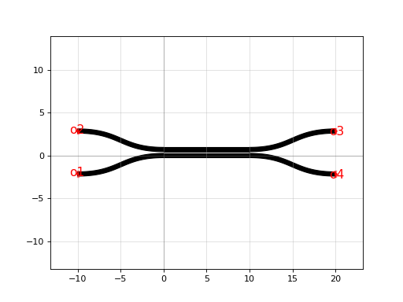 import gdsfactory.simulation.simphony.components as gc import gdsfactory.simulation.simphony as gs c = gc.coupler() gs.plot_model(c)
(Source code, png, hires.png, pdf)
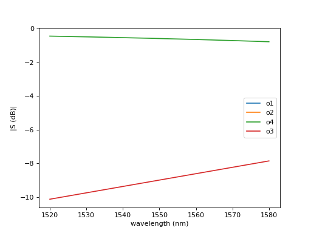
{kind=link}
{kind=link}
{kind=link}
{kind=link}
- gdsfactory.simulation.simphony.components.mmi1x2(**kwargs)[source]#
Return 1x2 MultiModeInterferometer Sparameter model.
- Keyword Arguments
width – input and output straight width.
width_taper – interface between input straights and mmi region.
length_taper – into the mmi region.
length_mmi – in x direction.
width_mmi – in y direction.
gap_mmi – gap between tapered wg.
taper – taper function.
straight – straight function.
with_bbox – add rectangular box in cross_section bbox_layers and bbox_offsets to avoid DRC sharp edges.
cross_section – specification (CrossSection, string or dict).
length_mmi <------> ________ | | | \__ | __ o2 __/ /_ _ _ _ o1 __ | _ _ _ _| gap_mmi \ \__ | __ o3 | / |________| <-> length_taper
import gdsfactory as gf c = gf.components.mmi1x2(width_mmi=2, length_mmi=2.8) c.plot()
(Source code, png, hires.png, pdf)
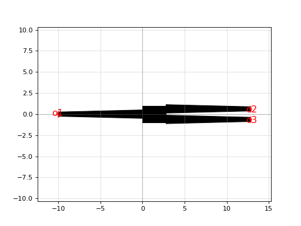 import gdsfactory.simulation.simphony as gs import gdsfactory.simulation.simphony.components as gc c = gc.mmi1x2() gs.plot_model(c)
(Source code, png, hires.png, pdf)
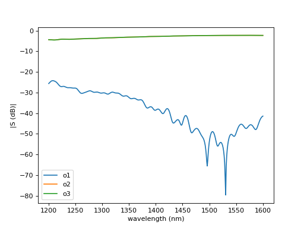
{kind=link}
{kind=link}
{kind=link}
{kind=link}
- gdsfactory.simulation.simphony.components.mmi2x2(**kwargs)[source]#
Return 2x2 MultiModeInterferometer Sparameter model.
- Keyword Arguments
width – input and output straight width.
width_taper – interface between input straights and mmi region.
length_taper – into the mmi region.
length_mmi – in x direction.
width_mmi – in y direction.
gap_mmi – (width_taper + gap between tapered wg)/2.
taper – taper function.
straight – straight function.
with_bbox – box in bbox_layers and bbox_offsets to avoid DRC sharp edges.
cross_section – spec.
length_mmi <------> ________ | | __/ \__ o2 __ __ o3 \ /_ _ _ _ | | _ _ _ _| gap_mmi __/ \__ o1 __ __ o4 \ / |________| <-> length_taper
import gdsfactory as gf c = gf.components.mmi2x2(length_mmi=15.45, width_mmi=2.1) c.plot()
(Source code, png, hires.png, pdf)
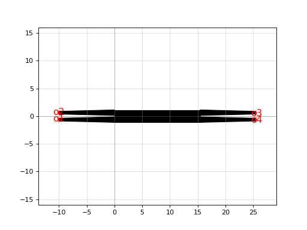 import gdsfactory.simulation.simphony as gs import gdsfactory.simulation.simphony.components as gc c = gc.mmi2x2() gs.plot_model(c)
(Source code, png, hires.png, pdf)
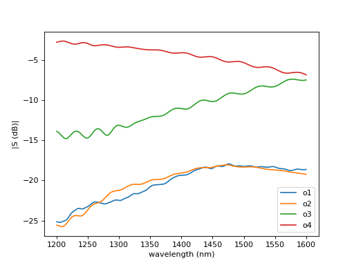
{kind=link}
{kind=link}
{kind=link}
{kind=link}
- gdsfactory.simulation.simphony.components.straight(length=10.0, width=0.5, thickness=0.22, sw_angle=90.0, **kwargs)[source]#
Return simphony Model for a Straight straight.
- Parameters
length (
float) – Length of the straight in um.width (
float) – Width of the straight in um (Valid for 0.4-0.6).thickness (
float) – Thickness of straight in um (Valid for 180nm-240nm).sw_angle (
float) – Sidewall angle. Valid for 80-90 degrees.kwargs – geometrical args that this model ignores
- gdsfactory.simulation.simphony.components.gc1550te(filepath=PosixPath('/home/runner/work/gdsfactory/gdsfactory/gdslib/sp/gc2dte/gc1550.dat'), numports=2)[source]#
Returns Sparameter model for 1550nm TE grating_coupler.
import gdsfactory.simulation.simphony as gs import gdsfactory.simulation.simphony.components as gc c = gc.gc1550te() gs.plot_model(c)
- gdsfactory.simulation.simphony.components.mzi(delta_length=10.0, length_y=4.0, length_x=0.1, splitter=<function mmi1x2>, combiner=None, straight_top=<function straight>, straight_bot=<function straight>, port_name_splitter_w0='o1', port_name_splitter_e1='o2', port_name_splitter_e0='o3', port_name_combiner_w0='o1', port_name_combiner_e1='o2', port_name_combiner_e0='o3')[source]#
Returns Mzi circuit model.
- Parameters
delta_length (
float) – bottom arm vertical extra length.length_y (
float) – vertical length for both and top arms.length_x (
float) – horizontal length.splitter (
Callable) – model function for combiner.combiner (
Optional[Callable]) – model function for combiner.wg – straight model function.
straight_top (Callable) –
straight_bot (Callable) –
port_name_splitter_w0 (str) –
port_name_splitter_e1 (str) –
port_name_splitter_e0 (str) –
port_name_combiner_w0 (str) –
port_name_combiner_e1 (str) –
port_name_combiner_e0 (str) –
__Lx__ | | Ly Lyr | | splitter=| |==combiner | | Ly Lyr | | DL/2 DL/2 | | |__Lx__|
import gdsfactory as gf c = gf.components.mzi(delta_length=10) c.plot()
(Source code, png, hires.png, pdf)
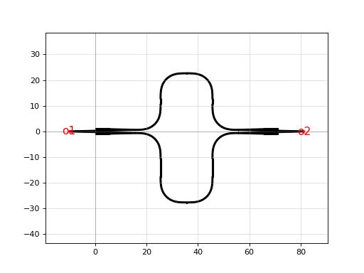 import gdsfactory.simulation.simphony as gs import gdsfactory.simulation.simphony.components as gc c = gc.mzi() gs.plot_circuit(c)
(Source code, png, hires.png, pdf)
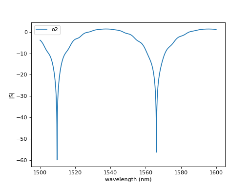
{kind=link}
{kind=link}
{kind=link}
{kind=link}
- gdsfactory.simulation.simphony.components.ring_double(wg_width=0.5, gap=0.2, length_x=4, radius=5, length_y=2, coupler=<function coupler_ring>, straight=<function straight>)[source]#
Return double bus ring Model made of two couplers (ct: top, cb: bottom).
connected with two vertical straights (yl: left, wr: right)
--==ct==-- | | wl wr length_y | | --==cb==-- gap length_x ---=========--- o2 length_x o3 / \ / \ | | o3 o2 ___ | wl wr | length_y _|_ o2 o3 | | \ / \ / ---=========--- o1 length_x o4
import gdsfactory as gf c = gf.components.ring_double(width=0.5, gap=0.2, length_x=4, radius=5, length_y=2) c.plot()
(Source code, png, hires.png, pdf)
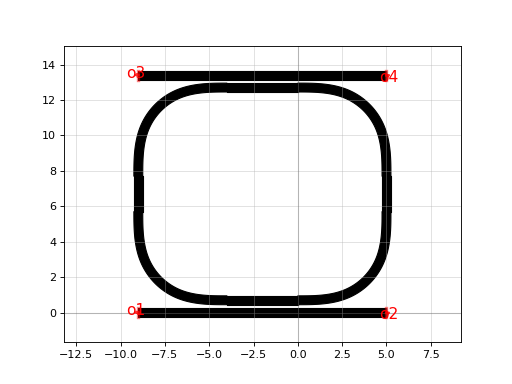 import gdsfactory.simulation.simphony as gs import gdsfactory.simulation.simphony.components as gc c = gc.ring_double() gs.plot_circuit(c)
(Source code, png, hires.png, pdf)
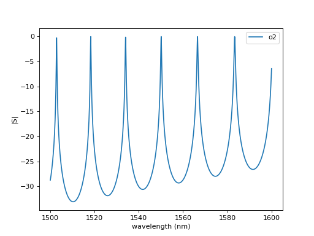 - Return type
Subcircuit- Parameters
wg_width (float) –
gap (float) –
length_x (float) –
radius (float) –
length_y (float) –
coupler (Callable[[...], simphony.models.Model]) –
straight (Callable[[...], simphony.models.Model]) –
{kind=link}
{kind=link}
{kind=link}
{kind=link}
- gdsfactory.simulation.simphony.components.ring_single(wg_width=0.5, gap=0.2, length_x=4, radius=5, length_y=2)[source]#
Return single bus ring Model made of a ring coupler (cb: bottom).
connected with: - 2 vertical straights (wl: left, wr: right) - 2 bend90 straights (bl: left, br: right) - 1 straight at the top (wt)
wt (top) length_x / \ / \ | | o1 o1 ___ | wl wr | length_y _|_ o2 o3 | | \ / \ / ---=========--- o1 o1 length_x o4 o2
import gdsfactory as gf c = gf.components.ring_single(width=0.5, gap=0.2, length_x=4, radius=5, length_y=2) c.plot()
(Source code, png, hires.png, pdf)
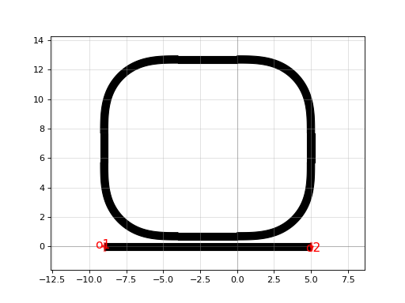 import gdsfactory.simulation.simphony as gs import gdsfactory.simulation.simphony.components as gc c = gc.ring_single() gs.plot_circuit(c)
(Source code, png, hires.png, pdf)
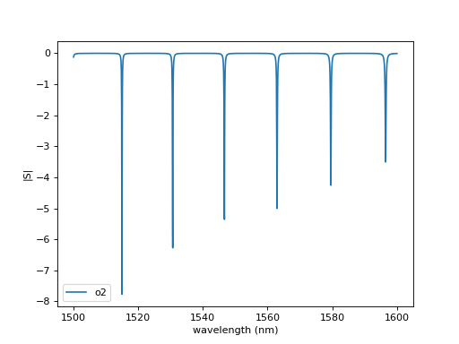 - Return type
Subcircuit- Parameters
wg_width (float) –
gap (float) –
length_x (float) –
radius (float) –
length_y (float) –
{kind=link}
{kind=link}
{kind=link}
{kind=link}